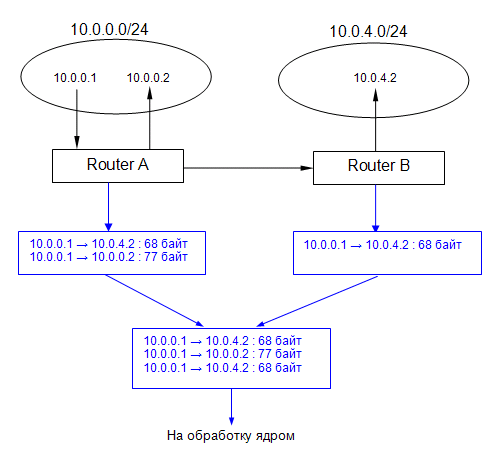
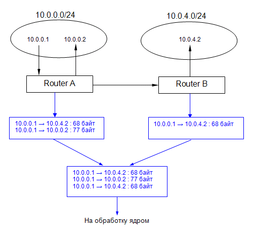

| Биллинговая система NoDeny. Проблема тарификации локального трафика. |
Подсчет трафика относительно несложная задача. Действительно, коллекторы, собирающие информацию по трафику,
выдают отчет в виде: с какого ip на какой ip сколько байт прошло через маршрутизатор. Все, что
остается NoDeny, так это подсчитать общую сумму для каждого клиентского ip и при этом классифицировать трафик.
Однако, все тривиально пока мы не сталкиваемся с необходимостью учета межклиентского трафика. Тут появляются серьезные нюансы. Автором эти нюансы разрешены и вы можете воспользоваться готовым решением. Тем не менее, желательно понимать суть реализации, разобраться почему предложена такая схема, которая многим может показаться как минимум необычной.
Возьмем, к примеру, сеть, состоящую из нескольких маршрутизаторов, каждый из которых обслуживает свою подсеть клиентов. На схеме ниже это 2 роутера: Router A обслуживает 10.0.0.0/24, Router B - 10.0.4.0/24 соответственно.
К слову, жесткая привязка к подсетям необязательна, например NoDeny допускает подключение VPN или PPPoE клиентов к любому серверу, если это необходимо. В данном случае мы рассмотрим схему с привязкой по подсетям.
Клиент 10.0.0.1 посылает 2 icmp пакета ping (пусть разных размеров) на два других клиентских ip: 10.0.0.2 и 10.0.4.2. Первый ip обслуживается тем же роутером, что и клиент 10.0.0.1, поэтому пакет будет зарегистрирован в коллекторе Роутера А. Пакет, ушедший на 10.0.4.2 будет зарегистрирован в коллекторах обоих роутеров.
По схеме синим цветом обозначена статистика, которая будет получена от каждого из коллекторов, после чего в объедененном виде передается на обработку ядру NoDeny.

Теперь давайте станем на место ядра и по заданным таблицам решим какому клиенту какой трафик насчитывать. В первой строчке сводных данных коллекторов видим, что пакет объемом 68 байт направлялся от клиента 10.0.0.1 к клиенту 10.0.4.2. Давайте решим какому клиенту начислять эти 68 байт? Может обоим?
Логично обоим, поскольку зарегистрированный пакетик является исходящим трафиком для клиента 10.0.0.1 и входящим для 10.0.4.2. Хорошо. Тогда мы так и поступим и засчитаем эти 68 байт обоим. Но тогда что мы будем делать когда наткнемся на такую же самую строчку, но полученную от роутера B? Получается мы снова начислим по 68 байт обоим клиентам, т.е. удвоим их реальный трафик.
Тогда давайте договоримся трафик между клиентами делить на 2! Условились трафик между клиентами делить на 2. Но тогда возникает проблема: будет поделен на 2 трафик который шел от 10.0.0.1 на 10.0.0.2, т.е мы уменьшим реальный трафик в два раза. Более того, представьте, что роутер Б заблокировал трафик, идущий на 10.0.4.2. Тогда строка-дубликат не появится в сводной таблице коллекторов.
Признаем, что игры с делением трафика неуместны. Тогда каким же образом правильно обрабатывать строки-дубликаты? Несколько лет назад автор предложил схему, которая «разруливала» эту ситуацию. Она стоит в шаге от финальной версии, поэтому ее мы тоже рассмотрим.
В той схеме было предложено пользоваться таким правилом: трафик начисляется абоненту только тогда, когда проходит через его «родной» роутер, т.е непосредственно через тот роутер, к которому подключен клиент. В биллинге имеется возможность указать, что к роутеру А непосредственно подключена сеть 10.0.0.0/24, поэтому в вышеуказанном примере ядро начислит 68 байт клиенту 10.0.0.1 поскольку первая строка данных коллектора была полученна от «родного» роутера клиента. При анализе 3й строки, 68 байт будет начислено клиенту 10.0.4.2, поскольку эта строка получена от его «родного» роутера.
Эта несложная схема с успехом работает, тем не менее есть существенный минус, который заставил автора ее проапгрейдить: не всегда существует привязка клиентских сетей к определенному роутеру. Например, многие провайдеры используют PPPoE-подключения, при этом для балансировки нагрузки (да и не только) могут предусмотреть подключение клиента к разным маршрутизаторам. В этом случае невозможно указать в конфиге какой роутер является «родным» для какой подсети.
Перед тем как, наконец, перейти к описанию финальной версии схемы, сообщим, что в предудущей схеме также присутствует возможность указать не только какой роутер, но и какой интерфейс роутера, является «родным» для какой подсети. Дело в том, что в варианте использования коллектора ipcad, последний настраивался так, что «слушал» несколько клиентских интерфесов, таким образом трафик между клиентами одного роутера мог попадать в коллектор дважды, поскольку проходил 2 интерфейса (с одним интерфейсом такого не происходило поскольку в одном эзернет сегменте трафик не идет через шлюз, а напрямую от клиента к клиенту). Т.е проблема решалась аналогично разрешению прохождения трафика через 2 роутера. Если еще не вспомнили о чем идет речь, то ищите в настройках админки конструкцию: 0.0.0.0/0 = *_*, здесь первая звездочка означает, что все клиентские сети (0.0.0.0/0) могут появиться на любом нашем роутере, а вторая - да еще и на любом интерфейсе роутера.
Наконец, добрались до описание финальной схемы. Привязка подсеть-роутер не задействуется. Вместо этого необходимо указать какие интерфейсы маршрутизатора являются клиентскими. На самом деле, автор несколько изменил даный вопрос на: необходимо указать какие интерфейсы являются неклиентскими. Поскольку обычно неклиентский интерфейс один (его еще называют внешним), то его проще и указывать в конфиге. NoDeny считает клиентскими те интерфейсы, которые не являются неклиентскими, если исходить из логики.
Рассмотрим пример. На роутере установлен сенсор, который регистрирует только входящий трафик со всех интерфейсов и отправляет статистику по netflow на коллектор. При этом в настройках указано, что неклиентский интерфейс роутера имеет индекс 5. Например, на анализ с коллектора netflow поступила строка:
что означает следующее: было зарегистрировано движение 68 байт от 10.0.0.1 к 10.0.4.2, при этом пакет пришел на интерфейс 1, а уйдет через интерфейс 5.
NoDeny пользуется такими правилами:
- если пакет пришел через клиентский интерфейс - трафик насчитывается клиенту src_ip;
- если пакет уйдет через клиентский интерфейс - трафик насчитывается клиенту dst_ip;
Слово «уйдет» здесь неслучайно, поскольку регистрируется только пришедший на роутер трафик, поэтому мы основываемся на решение роутера на какой интерфейс он отошлет пакет.
В примере трафик будет начислен клиенту 10.0.0.1 т.к. выполняется первое правило.
В случае же трафика 10.0.0.1 → 10.0.0.2 мы получим:
Обратите внимание, что в зависимости от состояния src_if и dst_if, трафик может быть начислен одному клиенту либо сразу двум либо никому вообще (например пакет пришел на внешний интерфейс, после чего смаршрутизировался на другой роутер).
Подытожим. Вышеприведенная схема решает задачу по регистрации трафика от одного абонента к другому - начисляется исходящая составляющая для клиента источника. При этом, если пакет, дойдет до второго клиента, т.е. клиент не будет заблокирован, то трафик будет засчитан и для этого клиента, но как входящая составляющая. Если клиент А переда клиенту Б 1Гб, то А будет насчитан 1Гб исходящего трафика, а Б - 1 Гб входящего.
Тем не менее, в реальности не все коллекторы предоставляют информацию по src_if и dst_if, например ipcad. Не вдаваясь в подробности его настройки (это будет в другой главе), отметим, что в случае с ipcad, на этапе посылки трафика в коллектор происходит пометка пакета так чтобы ядро знало как его интерпретировать. Последний столбец лога ipcad зарезервирован под понятие «интерфейс», однако системой NoDeny он как раз и используется в качестве метки. Если это поле = 1, то трафик должен быть зачислен src_ip, если поле = 2, то dst_ip. Скрипт обработки netflow просто конвертирует к этому виду данные, полученные по netflow. При этом используя вышеприведенные два правила. Таким образом для ядра NoDeny становится неважным какой именно коллектор используется.
Однако, все тривиально пока мы не сталкиваемся с необходимостью учета межклиентского трафика. Тут появляются серьезные нюансы. Автором эти нюансы разрешены и вы можете воспользоваться готовым решением. Тем не менее, желательно понимать суть реализации, разобраться почему предложена такая схема, которая многим может показаться как минимум необычной.
Возьмем, к примеру, сеть, состоящую из нескольких маршрутизаторов, каждый из которых обслуживает свою подсеть клиентов. На схеме ниже это 2 роутера: Router A обслуживает 10.0.0.0/24, Router B - 10.0.4.0/24 соответственно.
К слову, жесткая привязка к подсетям необязательна, например NoDeny допускает подключение VPN или PPPoE клиентов к любому серверу, если это необходимо. В данном случае мы рассмотрим схему с привязкой по подсетям.
Клиент 10.0.0.1 посылает 2 icmp пакета ping (пусть разных размеров) на два других клиентских ip: 10.0.0.2 и 10.0.4.2. Первый ip обслуживается тем же роутером, что и клиент 10.0.0.1, поэтому пакет будет зарегистрирован в коллекторе Роутера А. Пакет, ушедший на 10.0.4.2 будет зарегистрирован в коллекторах обоих роутеров.
По схеме синим цветом обозначена статистика, которая будет получена от каждого из коллекторов, после чего в объедененном виде передается на обработку ядру NoDeny.

Теперь давайте станем на место ядра и по заданным таблицам решим какому клиенту какой трафик насчитывать. В первой строчке сводных данных коллекторов видим, что пакет объемом 68 байт направлялся от клиента 10.0.0.1 к клиенту 10.0.4.2. Давайте решим какому клиенту начислять эти 68 байт? Может обоим?
Логично обоим, поскольку зарегистрированный пакетик является исходящим трафиком для клиента 10.0.0.1 и входящим для 10.0.4.2. Хорошо. Тогда мы так и поступим и засчитаем эти 68 байт обоим. Но тогда что мы будем делать когда наткнемся на такую же самую строчку, но полученную от роутера B? Получается мы снова начислим по 68 байт обоим клиентам, т.е. удвоим их реальный трафик.
Тогда давайте договоримся трафик между клиентами делить на 2! Условились трафик между клиентами делить на 2. Но тогда возникает проблема: будет поделен на 2 трафик который шел от 10.0.0.1 на 10.0.0.2, т.е мы уменьшим реальный трафик в два раза. Более того, представьте, что роутер Б заблокировал трафик, идущий на 10.0.4.2. Тогда строка-дубликат не появится в сводной таблице коллекторов.
Признаем, что игры с делением трафика неуместны. Тогда каким же образом правильно обрабатывать строки-дубликаты? Несколько лет назад автор предложил схему, которая «разруливала» эту ситуацию. Она стоит в шаге от финальной версии, поэтому ее мы тоже рассмотрим.
В той схеме было предложено пользоваться таким правилом: трафик начисляется абоненту только тогда, когда проходит через его «родной» роутер, т.е непосредственно через тот роутер, к которому подключен клиент. В биллинге имеется возможность указать, что к роутеру А непосредственно подключена сеть 10.0.0.0/24, поэтому в вышеуказанном примере ядро начислит 68 байт клиенту 10.0.0.1 поскольку первая строка данных коллектора была полученна от «родного» роутера клиента. При анализе 3й строки, 68 байт будет начислено клиенту 10.0.4.2, поскольку эта строка получена от его «родного» роутера.
Эта несложная схема с успехом работает, тем не менее есть существенный минус, который заставил автора ее проапгрейдить: не всегда существует привязка клиентских сетей к определенному роутеру. Например, многие провайдеры используют PPPoE-подключения, при этом для балансировки нагрузки (да и не только) могут предусмотреть подключение клиента к разным маршрутизаторам. В этом случае невозможно указать в конфиге какой роутер является «родным» для какой подсети.
Перед тем как, наконец, перейти к описанию финальной версии схемы, сообщим, что в предудущей схеме также присутствует возможность указать не только какой роутер, но и какой интерфейс роутера, является «родным» для какой подсети. Дело в том, что в варианте использования коллектора ipcad, последний настраивался так, что «слушал» несколько клиентских интерфесов, таким образом трафик между клиентами одного роутера мог попадать в коллектор дважды, поскольку проходил 2 интерфейса (с одним интерфейсом такого не происходило поскольку в одном эзернет сегменте трафик не идет через шлюз, а напрямую от клиента к клиенту). Т.е проблема решалась аналогично разрешению прохождения трафика через 2 роутера. Если еще не вспомнили о чем идет речь, то ищите в настройках админки конструкцию: 0.0.0.0/0 = *_*, здесь первая звездочка означает, что все клиентские сети (0.0.0.0/0) могут появиться на любом нашем роутере, а вторая - да еще и на любом интерфейсе роутера.
Наконец, добрались до описание финальной схемы. Привязка подсеть-роутер не задействуется. Вместо этого необходимо указать какие интерфейсы маршрутизатора являются клиентскими. На самом деле, автор несколько изменил даный вопрос на: необходимо указать какие интерфейсы являются неклиентскими. Поскольку обычно неклиентский интерфейс один (его еще называют внешним), то его проще и указывать в конфиге. NoDeny считает клиентскими те интерфейсы, которые не являются неклиентскими, если исходить из логики.
Рассмотрим пример. На роутере установлен сенсор, который регистрирует только входящий трафик со всех интерфейсов и отправляет статистику по netflow на коллектор. При этом в настройках указано, что неклиентский интерфейс роутера имеет индекс 5. Например, на анализ с коллектора netflow поступила строка:
src_ip dst_ip bytes src_if dst_if 10.0.0.1 10.0.4.2 68 1 5
что означает следующее: было зарегистрировано движение 68 байт от 10.0.0.1 к 10.0.4.2, при этом пакет пришел на интерфейс 1, а уйдет через интерфейс 5.
NoDeny пользуется такими правилами:
- если пакет пришел через клиентский интерфейс - трафик насчитывается клиенту src_ip;
- если пакет уйдет через клиентский интерфейс - трафик насчитывается клиенту dst_ip;
Слово «уйдет» здесь неслучайно, поскольку регистрируется только пришедший на роутер трафик, поэтому мы основываемся на решение роутера на какой интерфейс он отошлет пакет.
В примере трафик будет начислен клиенту 10.0.0.1 т.к. выполняется первое правило.
В случае же трафика 10.0.0.1 → 10.0.0.2 мы получим:
src_ip dst_ip bytes src_if dst_if 10.0.0.1 10.0.0.2 68 1 2- видно что трафик пришел через клиентский интерфейс и уйдет через клиентский. Поэтому он будет начислен обоим клиентам, поскольку выполняются оба правила.
Обратите внимание, что в зависимости от состояния src_if и dst_if, трафик может быть начислен одному клиенту либо сразу двум либо никому вообще (например пакет пришел на внешний интерфейс, после чего смаршрутизировался на другой роутер).
Подытожим. Вышеприведенная схема решает задачу по регистрации трафика от одного абонента к другому - начисляется исходящая составляющая для клиента источника. При этом, если пакет, дойдет до второго клиента, т.е. клиент не будет заблокирован, то трафик будет засчитан и для этого клиента, но как входящая составляющая. Если клиент А переда клиенту Б 1Гб, то А будет насчитан 1Гб исходящего трафика, а Б - 1 Гб входящего.
Тем не менее, в реальности не все коллекторы предоставляют информацию по src_if и dst_if, например ipcad. Не вдаваясь в подробности его настройки (это будет в другой главе), отметим, что в случае с ipcad, на этапе посылки трафика в коллектор происходит пометка пакета так чтобы ядро знало как его интерпретировать. Последний столбец лога ipcad зарезервирован под понятие «интерфейс», однако системой NoDeny он как раз и используется в качестве метки. Если это поле = 1, то трафик должен быть зачислен src_ip, если поле = 2, то dst_ip. Скрипт обработки netflow просто конвертирует к этому виду данные, полученные по netflow. При этом используя вышеприведенные два правила. Таким образом для ядра NoDeny становится неважным какой именно коллектор используется.